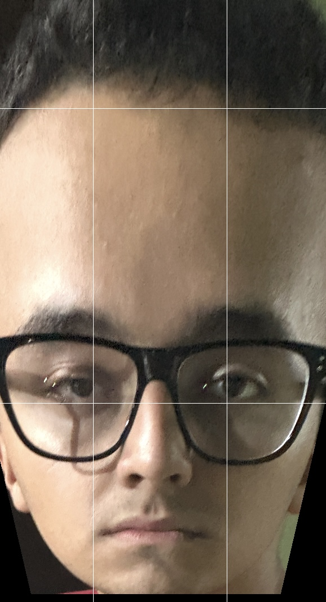

Mestre da intensidade sonora | Pilar do Goianal™ | Surpreende todos
Eu gosto muito de contar histórias que eu já vivi; por algum motivo, a minha voz tem algo que prende a atenção das pessoas. É como se você estivesse do lado de uma caixa de som: não tem como ignorar ela.
Inclusive, falando em compartilhar histórias, tenho uma muito engraçada de quando eu estava no churrasco do Goianal™, e lá tinha eu, o WR, o Cudy, o Vatapá, o [bzz bzz] Dedo, o Ged, o [bzzzzzzz] ... Peraí, mas que barulho é esse? - Caraca, OLHA O TAMANHO DAQUELE MOSQUI-
Instituto Tecnológico de Aeronáutica (ITA)
Força Aérea Brasileira (FAB)
Cirque du Soleil + Freelancer como mágico
Frente e verso?